fx-cc-dance-flash at 0.3 s; RGBA MAE8/p99 [[0.34329427083333336, 8], [0.2429904513888889, 4], [0.27471788194444446, 8], [0, 0]]

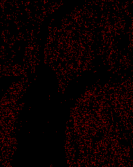
Diagnostic only. Shared shaders, owner limits and production frames remain unchanged. Images: mobile / candidate / heatmap.
fx-cc-dance-flash at 0.3 s; RGBA MAE8/p99 [[0.34329427083333336, 8], [0.2429904513888889, 4], [0.27471788194444446, 8], [0, 0]]

fx-cc-color-pixel at 0.3 s; RGBA MAE8/p99 [[0.3646918402777778, 9], [0.2853949652777778, 4], [0.2913628472222222, 8], [0, 0]]
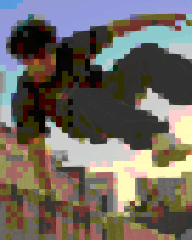
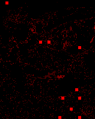
fx-cc-color-pixel at 0.9 s; RGBA MAE8/p99 [[0.3525390625, 9], [0.2583984375, 4], [0.22884114583333334, 8], [0, 0]]
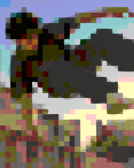
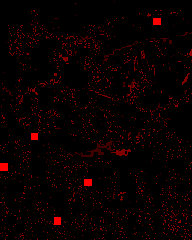
fx-cr-tri-split at 0.9 s; RGBA MAE8/p99 [[4.901649305555556, 57], [4.701128472222222, 57], [4.668402777777778, 66], [0, 0]]
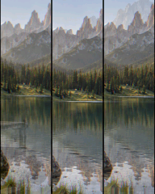
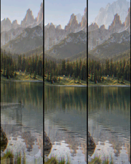
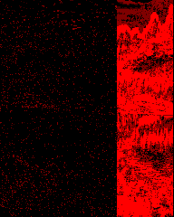
fx-mt-mirror-beat at 0.9 s; RGBA MAE8/p99 [[0.26569010416666666, 8], [0.26864149305555557, 4], [0.2818359375, 9], [0, 0]]
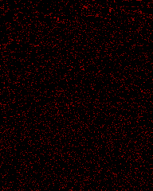
fx-hyperspace at 0.3 s; RGBA MAE8/p99 [[2.826801215277778, 90], [2.9291666666666667, 97], [3.3055555555555554, 107], [0, 0]]

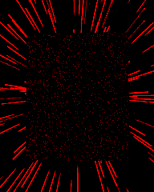
fx-hyperspace at 0.9 s; RGBA MAE8/p99 [[3.2042100694444446, 99], [3.2964409722222223, 105], [3.631618923611111, 124], [0, 0]]

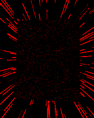
fx-hyperspace at 1.5 s; RGBA MAE8/p99 [[3.5567057291666666, 107], [3.693381076388889, 114], [4.109982638888889, 131], [0, 0]]

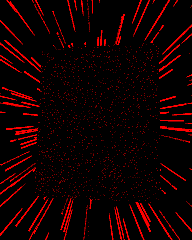
fx-blink at 0.9 s; RGBA MAE8/p99 [[0.23396267361111112, 8], [0.25145399305555555, 4], [0.26783854166666665, 9], [0, 0]]
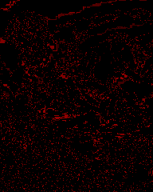
fx-tr-flare at 0.9 s; RGBA MAE8/p99 [[0.04422743055555556, 0], [0.06171875, 4], [0.07849392361111111, 0], [0, 0]]

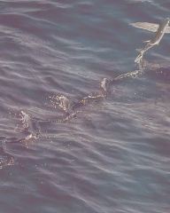
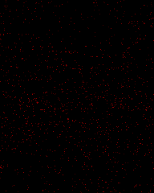
fx-ov-tr-diamond at 0.3 s; RGBA MAE8/p99 [[0, 0], [0, 0], [0, 0], [0, 0]]


fx-ov-tr-diamond at 0.9 s; RGBA MAE8/p99 [[0, 0], [0, 0], [0, 0], [0, 0]]


fx-ov-tr-diamond at 2.1 s; RGBA MAE8/p99 [[0, 0], [0, 0], [0, 0], [0, 0]]